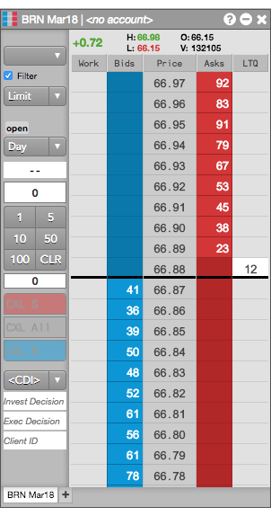
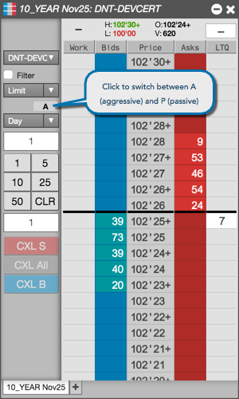

MD Trader exposes some additional buttons to support exchange-specific order functionality.
The ICE, Eurex, and EEX exchanges allow you to indicate whether an order opens or closes a position. To support this functionality, MD Trader displays an Open/Close toggle button, as shown:
For exchanges that need to comply with the MiFID II regulations, the Show order entry compliance fields setting in the Orders section of Preferences can be enabled to add compliance fields to MD Trader.

The items added include:
If specified, these values override the default order profile settings defined in Setup.
The BrokerTec exchange supports passive and aggressive orders. To support this functionality, MD Trader displays a A/P (aggressive/passive) toggle button that indicates whether you want to place a passive or aggressive order.
By default, all orders sent using MD Trader are Aggressive.
